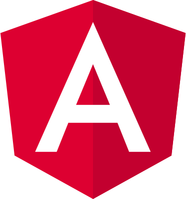

I'm certified within both SAFe and Scrum, and I have worked in these agile frameworks on many occasions in my career.
Professional Experience
Mit.dk
Netcompany
New Digital Mailbox System (Mit.dk) developed for private and public sector built on a Springboot microservice architecture utilizing Kafka as an event-driven communication platform. View-clients for both web and app were built using React Native. Everything was run on Kubernetes.
Springboot, Junit, Swagger, Docker, Java, JPA, React Native, Vue.js, SQL, git, MVC, Elasticsearch, Javascript, Typescript, HTML, RxJS, Bootstrap, Jenkins, Node.js, Spring (Boot, Data, Web, Security, Cloud), Hibernate, MSSQL, Kubernetes, Maven, Kafka, Gradle, CSS, SASS, PostgreSQL, OAuth 2.0, OpenID Connect.
Topdanmark
Netcompany
New Core Policy System for one of Denmark's largest insurance companies built using standard insurance product system: Guidewire.
Guidewire, Gosu, Java, Javascript, Jenkins, AWS, Swagger, REST, SOAP, SoapUI.
SOS International
Netcompany
New Case Management System for a large Danish assistance and insurance company built on a Springboot microservice architecture utilizing ActiveMQ as an event-driven communication platform. The user interface was built as an Angular Single Page Application. Everything was run on Openshift.
Springboot, Junit, Swagger, Docker, Java, JPA, Angular, SQL, SAFe, Scrum, git, MVC, Elasticsearch, Openshift, Javascript, Typescript, HTML, RxJS, Bootstrap, Jenkins, Node.js, Spring (Data, Web, Security), Liquibase, Hibernate, MSSQL, Kubernetes, Maven, ActiveMQ.
Center for Energy Resources Engineering
OPTION
The job was to extend functionality of current optimization tools related to oil production optimization. The main task was to write an optimization module that makes it possible to substitute MATLABs FMINCON with state-of-the-art optimizers, IPOPT, KNITRO and NPSOL in combinaton with an Eclipse E300 reservoir simulator.
MatLab, Octave, Shell, E300 Reservoir Simulator (Schlumberger), IPOPT, KNITRO, NPSOL.
DTU - Technical University of Denmark
DTU
Parallel to my study at DTU I was employed as a teaching assistant for the DTU course "Calculus 01" and "Linear Algebra 01" (course nr. 01901 and 01902 respectively). This requires a complete understanding of the subjects at hand as to help students understand the curriculum and correcting mandatory assignments.
Calculus and Algebra 1. Course http://kurser.dtu.dk/course/01901, Calculus and Algebra 2. Course http://kurser.dtu.dk/course/01920.
Skills & Competencies
Spring
Proficient
I enjoy developing with Spring, and have done so since the
beginning of my career. I have experience with a variety of the
different projects in the Spring ecosystem.

Angular
Proficient
I have worked with Angular, since the beginning of my career.
I enjoy working with the rich variety of features available in Angular, and the structure and
reuseability that comes naturally with this framework.
Typescript
Proficient
I have worked a lot with Typescript (and Javascript), but I
particular appreciate this language for
the type safety and tooling it adds to Javascript.
Complete skillset
Javascript
Typescript
Java
Spring (Boot, Web, Cloud, Security, Data)
Node.js
Jenkins
Angular2+
Maven
Gradle
Kafka
RxJS
Vue.js
Firebase
Liquibase
Hibernate
Shell
CSS/SCSS
Git
C/C++
Python
MatLab
Accomplishments & Academic Experience
SAFe Agilist
SAFe 4
Scrum Master
PSM 1
I hold a M.Sc degree in Mathematical Modelling and Computer Science from the Technical University of Denmark (DTU) with a specialization within Scientific Computing, Numerical and Predictive Modelling, Machine Learning, Optimization and a theoretical understanding of Advanced Mathematics. My background in mathematics has given me an strong analytical mindset and aptitude for problem solving, which I use everyday in my work. University grades and curriculum can be forwarded.
A categorised list of publications that I have written is available below. All three papers have been published in international conference proceedings.
State and Input Estimation of Nonlinear Chromatographic Processes
Alexander Hørsholt
Spatial Discretization and Kalman Filtering for Ideal Packed-Bed Chromatography
Alexander Hørsholt
A DG-FE Method for Simulation of Packed Bed Chromatographic Processes
Alexander Hørsholt
Contact me
I'm a problem solver and a fast learner. I'm able to quickly get up-to-speed in complex systems in both new and long running projects, and I thrive well in dynamic environments (where scope and focus may change with greater frequency). I offer critical thinking, attention to detail, consulting and software development expertise with my domains of proficiency.
I'm proficient with: Javascript, Typescript, Java, Spring, Node.js, Angular, Vue.js, Maven, Gradle, Kafka, RxJS, Liquibase, Hibernate, Git, Jenkins, Bootstrap, Google Firebase.
I can provide you with:
- Frontend development in Angular, Vue.js, React and other modern web frameworks.
- Backend development in Spring, Java and Node.js.
- Requirements gathering, software and systems analysis.
- Prototyping (figma), software and systems design.
If you are interested don't hesitate reaching out to me via mail: alexander.hoersholt@gmail.com or phone: +45 23 662 306.